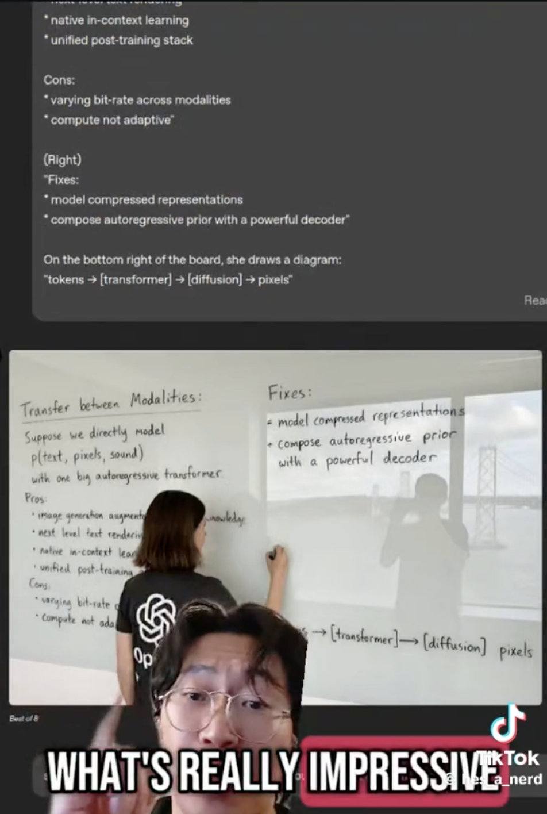
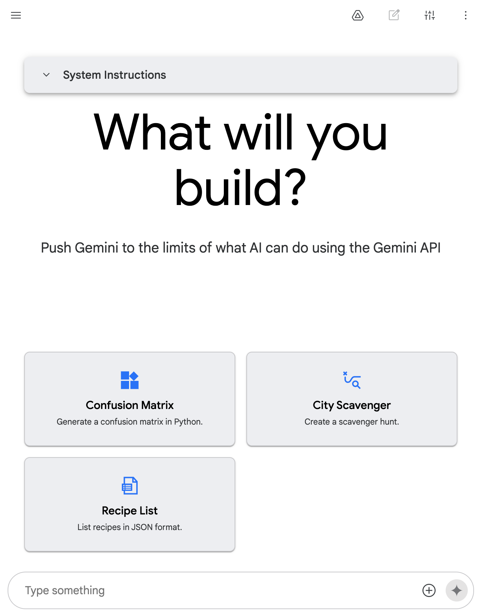
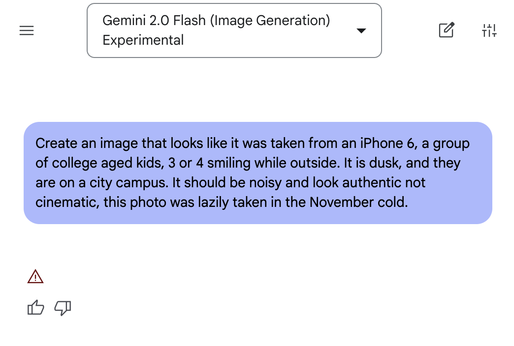
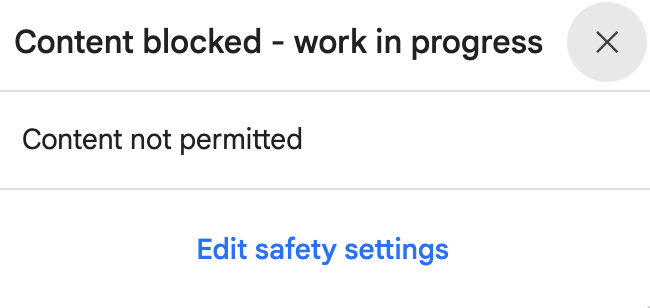
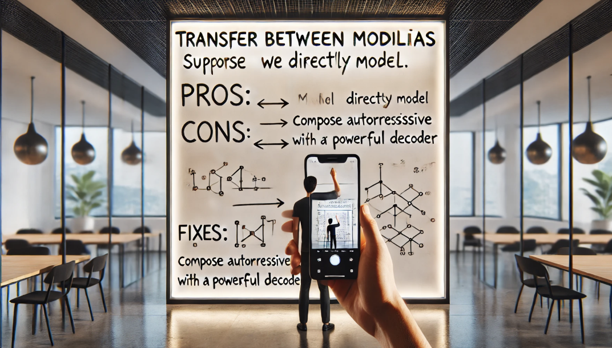
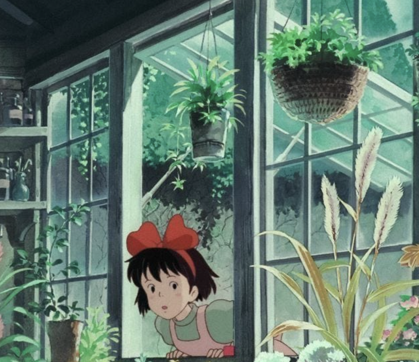
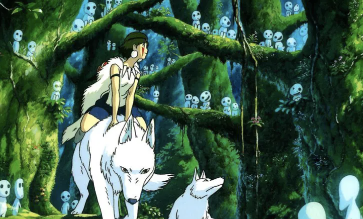
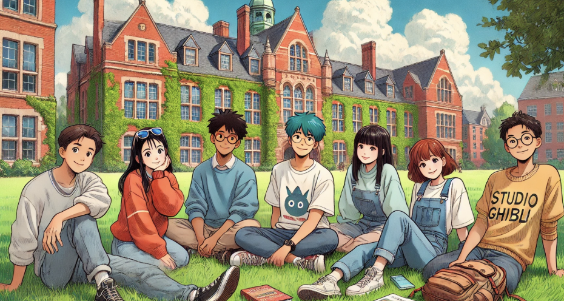

Gemini 2.0 Flash Experimental !!!
The class recently got an announcement about Google’s latest multi-modal text to image model, Gemini 2.0 Flash Experimental.
The model can edit images on the gly without generating them entirely new, which is crazy.
Around the same time, I also stumbled upon a Tik Tok video by @hes_a_nerd.

At first, he explains how this photo looks like a normal photo taken with a group of people… but it’s actually ChatGPT 4.0s latest ability with photos. It can now generate photos with direct prompting and it’s way better than DALLE.
Here’s their statement about this new update:
> At OpenAI, we have long believed image generation should be a primary capability of our language models. That’s why we’ve built our most advanced image generator yet into GPT‑4o. The result—image generation that is not only beautiful, but useful.
You might wonder, how did someone create this image. Here’s what they typed in.
prompt: Create an image that looks like it was taken from an iPhone 6, a group of college aged kids, 3 or 4 smiling while outside. It is dusk, and they are on a city campus. It should be noisy and look authentic not cinematic, this photo was lazily taken in the November cold.There’s nothing that stands out about it that looks like it’s from AI. It can generate text the most flawlessly, and it can create text on the boards. There’s even a reflection and the details are insane. You can edit with one sentence. That’s crazy. Take a look.

You can tell that in the prompt, they create specific text to have in the imaging. This is a next level, new update. It’s scary.
The improved capabilities are made to train models on the joint distribution of online images and text, learning not just how images relate to language, but how they relate to each other. It’s combined with aggressive post-training and is able to produce visual fluency, capable of generating images that are useful, consistent, and context-aware.
Text rendering is possible. 4o’s ability to blend precise symbls with imagery turns image generation into a tool for visual communication.
For this blog post, I want to experiment with Gemini 2.0 Flash Experimental. Let’s see if I can replicate these images above and prompt it to create realistic photos.
Let’s Create the College Group Photo

Woah, I’ve never used this before. I like how they have examples of what you can ask it to do. But I’m going to stick to entering the prompt for the photo. Let’s see if it generates something similar to ChatGPT’s model.

Erm…. why is this not working.

Ok, maybe the prompt was too complicated. I’ll just… simplify it and ask:
prompt: Can you create a photo of college kids on their campus.The output is this:
{
"prompt": "A photorealistic image of a diverse group of four college students (early 20s, mixed gender and ethnicity) sitting together casually on a sunny green lawn (quad) on a university campus. They are dressed in casual clothes like jeans, t-shirts, and hoodies, with backpacks resting beside them on the grass. One student is smiling while looking at a laptop open on their lap, while the others are engaged in relaxed conversation, looking at each other or the laptop screen. In the background, classic brick university buildings with large windows and mature trees are visible under a clear blue sky with soft sunlight. The atmosphere is bright, relaxed, and friendly. Medium shot, natural lighting.",
"negative_prompt": "blurry, unfocused, poorly lit, distorted faces, unnatural poses, empty campus, children, high school students, business attire, overly staged",
"style_raw": "photorealistic",
"aspect_ratio": "16:9"
}What I did with this output was I inputted into ChatGPT 4o. This is what it gave me.
This isn’t as realistic as the original. I wonder why.
There’s a toggle where I can click Gemini’s Thoughts, so here’s what it explains. It explains the thinking process that could lead to the image and description that I provided:
Understand the Request: The user wants a photo of "college kids on their campus." This is a fairly broad request, so I need to make some assumptions or choose a common, relatable scenario.
Identify Key Elements:
Subject: College students ("kids" implies younger, undergraduate age, probably diverse).
Setting: A college campus. This needs typical campus elements.
Action/Mood: What are they doing? How do they feel? Needs to look natural and characteristic of college life.
Brainstorm Campus Scenarios:
Walking between classes.
Sitting on a quad/lawn, studying or relaxing.
Gathered near a prominent building (library, student union, academic hall).
Interacting in a group.
Carrying backpacks, books, laptops.
Laughing, talking, focused.
Choose a Specific Scenario: Sitting on the grass on a sunny day seems like a classic, positive, and visually appealing campus scene. It allows for group interaction and showcases the campus environment. Let's go with a small group relaxing and maybe chatting or looking at something together (like a laptop or phone).
Flesh out the Details for the Image Generation:
Number of students: A small group, maybe 3-5, feels natural for a casual gathering.
Diversity: Aim for a mix of genders and ethnicities to represent a typical modern campus.
Appearance: Casual college attire – jeans, t-shirts, hoodies, sneakers. Backpacks nearby. Maybe one has a laptop or notebook out.
Setting Details: Green grass (a quad or lawn). Some recognizable campus architecture in the background – perhaps brick buildings, trees, pathways. Maybe hints of other students further away to add life.
Lighting/Atmosphere: Bright, sunny day. Warm, relaxed, friendly atmosphere. Natural lighting.
Composition: Medium shot, showing the students and some of the surrounding campus. Eye-level perspective.
Formulate the Prompt for the AI Image Generator: Based on the above details, construct a prompt. It needs to be descriptive.
Initial thought: "College students on campus lawn." (Too simple)
Adding detail: "Photo of a diverse group of 4 college students (2 male, 2 female) sitting casually on a sunny green lawn on their university campus."
Adding action/mood: "Photo of a diverse group of 4 college students (early 20s) laughing and talking together, sitting casually on a sunny green quad lawn on their university campus."
Adding background/atmosphere: "Photorealistic image of a diverse group of 4 college students (early 20s, mixed gender/ethnicity) sitting together casually on a bright, sunny green lawn (quad) on a university campus. They are dressed in casual clothes (jeans, t-shirts, hoodies) and have backpacks nearby. One might be looking at a laptop. In the background, classic brick university buildings and trees are visible under a clear blue sky. Warm, relaxed, friendly atmosphere. Natural lighting." (This is getting good and detailed).
Refining for style: "Photorealistic style, natural lighting, medium shot."
Generate the Image: Use the refined prompt with the AI image generator.
Review the Output: Look at the generated image. Does it match the request and the intended details?
Are they college-aged? Yes.
Is it a campus setting? Yes, lawn, buildings.
Is the group diverse? Yes.
Is the mood right? Yes, looks relaxed/interactive.
Is the quality good? Yes, photorealistic.
Write the Description: Describe the generated image for the user, highlighting the key elements and confirming it meets their request.
Start by stating what the image shows.
Describe the subjects (students, their appearance, actions).
Describe the setting (lawn, buildings, weather).
Mention the overall mood/atmosphere.
Offer to generate variations if needed.
Final Check: Read the request, the generated image, and the description together. Does it all align? Yes.Well. Let’s see if it can edit current photos. I’ll use the college campus one that it generated, and I’ll add a few things here and there.
Attempting to Generate Words in A Photo
Let’s see if Gemini is able to create readable words in an image.
Create an image of someone taking a picture of a person writing on a white board. On the white board, the title is "transfer between modalities" on the top left. Under this text, have this sentence "Suppose we directly model. Under this text, have a pros and cons. To the right, have a paragraph that says "Fixes: * model compressed representations *compose autoregressive prior with a powerful decoder.Here’s the output:
{
"prompt": "Photorealistic image capturing a scene from slightly behind a person holding a smartphone horizontally, taking a picture. The main focus is another person (e.g., a researcher or student) standing in front of a large, brightly lit whiteboard in a modern office or classroom setting. The person at the whiteboard is holding a black marker, perhaps pointing towards the text. The whiteboard clearly displays the following handwritten text:\n\nTop left corner: Title 'Transfer Between Modalities'\nDirectly below the title: Sentence 'Suppose we directly model.'\nBelow that sentence, a section structured for 'Pros:' and 'Cons:' (perhaps with a few placeholder bullet points or lines under each label).\nPositioned to the right of the 'Pros and Cons' section: A paragraph titled 'Fixes:' followed by two distinct bullet points (using asterisks):\n'* model compressed representations'\n'* compose autoregressive prior with a powerful decoder'\n\nThe lighting is bright and naturalistic, typical of an indoor office environment. The focus should be sharp on the whiteboard content and the person writing/presenting. The photographer's hands and phone are partially visible in the foreground framing the shot. Minimal background clutter.",
"negative_prompt": "blurry text, illegible writing, misspelled words, incorrect text layout, distorted hands, multiple people writing, chalkboard, dark room, messy handwriting, cartoon, illustration, drawing, sketch, cluttered background, empty whiteboard",
"style_raw": "photorealistic",
"aspect_ratio": "16:9"
}
Well, this looks nothing like the example that was given above. It was able to create some words, but there’s still some slight mistakes with the words in the photo. The photo also doesn’t look realistic, which is also a big con.
Modifying Images
Another tool Gemini can be used for is creating edits of images. A friend of mine a few days ago posted “Studio Ghibli” versions of his photos. Here’s an example of what Studio Ghibli art is like:


I wonder if this will be possible using Gemini. Let’s try it out.
{
"prompt": "A group of five diverse college students (mixed gender and ethnicity, resembling the original photo's subjects) sitting together casually on a lush green lawn on a university campus quad, rendered in the iconic Studio Ghibli anime style. They are dressed in simple, casual clothes (jeans, t-shirts, sweaters). Backpacks, a slightly stylized laptop, and books rest beside them on the grass. They have expressive, kind faces with characteristic Ghibli eyes, smiling and engaged in relaxed conversation. In the background, charming, slightly weathered brick university buildings with large windows and hints of ivy are depicted with soft, painterly detail. The scene is bathed in warm, gentle sunlight under a vibrant blue sky with fluffy, hand-painted Ghibli clouds. The overall atmosphere is peaceful, nostalgic, and heartwarming. Hand-drawn aesthetic, vibrant but soft color palette, medium shot.",
"negative_prompt": "photorealistic, 3D render, CGI, photo, photograph, realistic proportions, overly detailed textures, modern anime style, harsh lines, dark, gloomy, watermark, text, signature, blurry, unfocused",
"style_raw": "Studio Ghibli anime style",
"aspect_ratio": "16:9"
}| Original | Edited Version |
|---|---|
|  |
This was successful!
Gemini was able to edit photos correctly.
Conclusion
Although Gemini 2.0 Flash Experimental didn’t create the most realistic photos, nor did it do the best with text in an image, it did a create job of editing the style of the photo when I asked it to create a “Studio Ghibli” version.
Perhaps there was something wrong with my versions, because it only provided the prompt for the images and I had to enter it into ChatGPT 4o to create the images.
I really liked the thoughts section of Gemini, it breaks down how it interpretted my prompting and was able to explain most of how it created these images.
All in all, I would use Gemini to modify the style of pictures in the future. I wouldn’t use it for text, but it’s great for a more creative use.